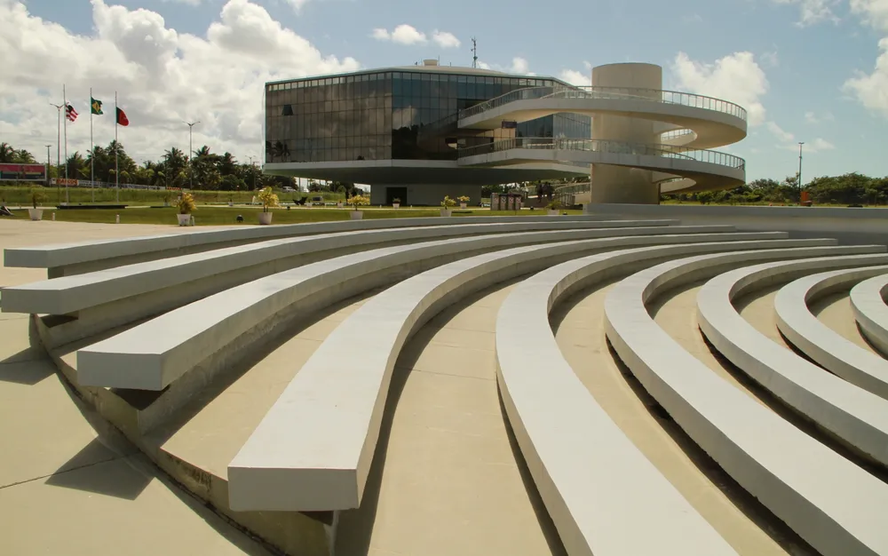

Conheça a Zona Leste

Explore a faixa litorânea e os bairros próximos à orla. Conheça praias, atrações turísticas e espaços de lazer.
Bairros
- Altiplano
- Bessa
- Brisamar
- Cabo Branco
- João Agripino
- Manaíra
- São José
- Tambaú
Praias e pontos turísticos
- Praia de Cabo Branco
- Praia de Tambaú
- Praia de Manaíra
- Praia do Bessa
- Farol do Cabo Branco
- Estação Cabo Branco - Ciência, Cultura e Artes
- Mercado de Artesanato
- Parque Linear Parahyba 4
Eventos e programação
Descubra eventos na orla, atividades esportivas, atrações culturais e shows.